Inspect raw pixels before overlays. The script has not labelled physical ownership or changed a score. A: first interval, amber circles. B: second interval, cyan crosses.
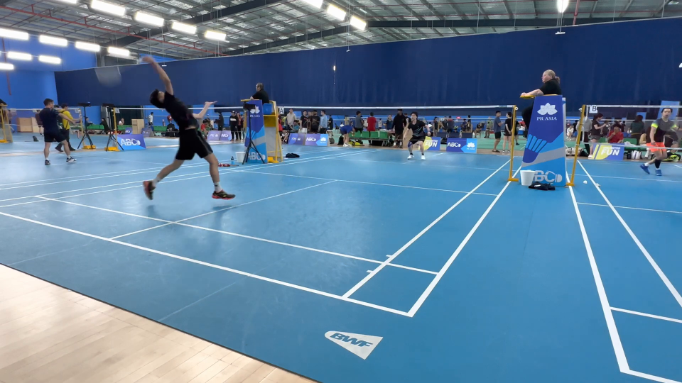
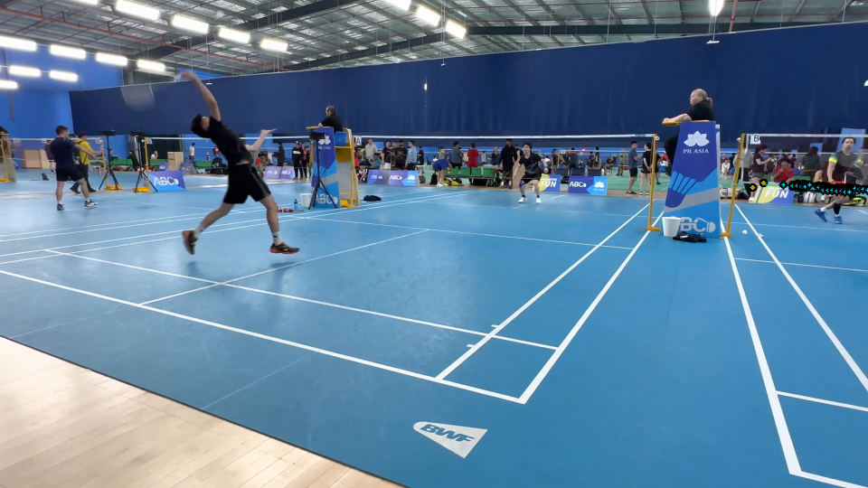
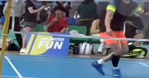
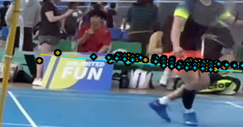
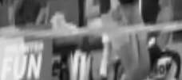
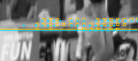
Shared strips are interpolated displays of the 960×540 working image, not additional resolution. Checker areas are unavailable. Use the native crop for context; neither colour denotes court identity.
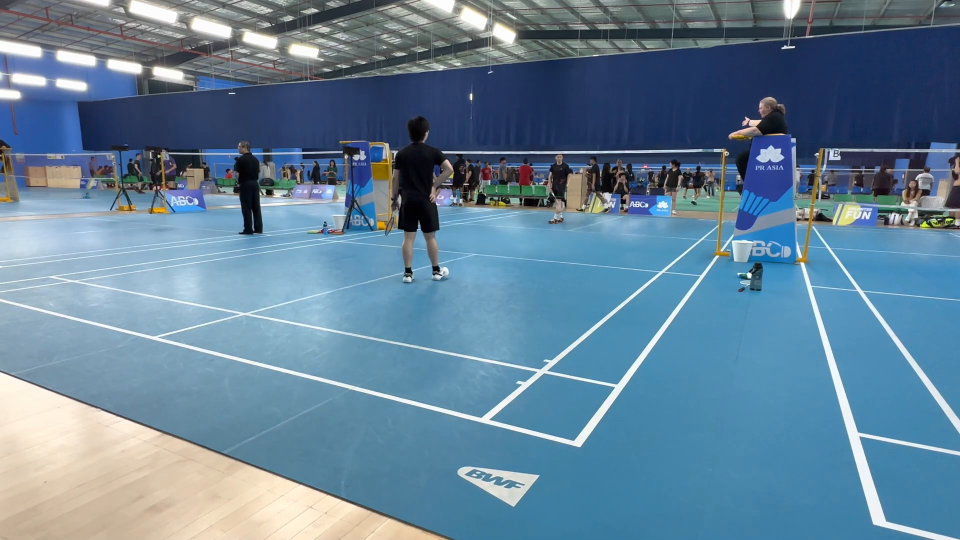
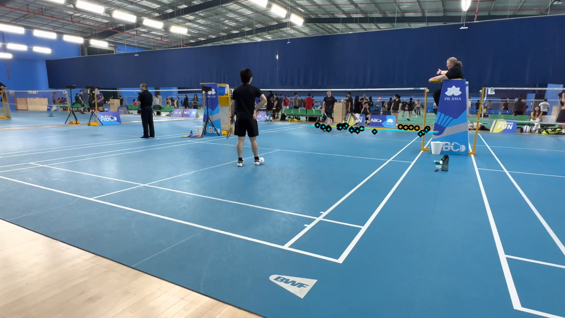
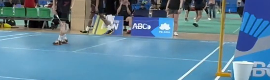
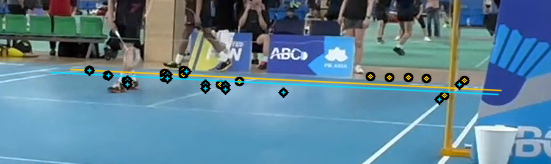
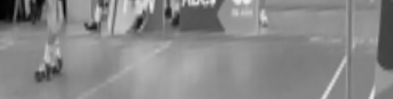
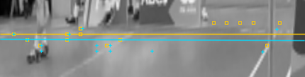
Shared strips are interpolated displays of the 960×540 working image, not additional resolution. Checker areas are unavailable. Use the native crop for context; neither colour denotes court identity.
For each pair: identify which visible structure supplies the passing tests; report whether the two named markings use distinct physical ridges, one ridge, or unresolved evidence. For the approved pair, explain any visible weak/crowded/occluded support without inventing a rejection. No threshold fitting or automatic acceptance claim.